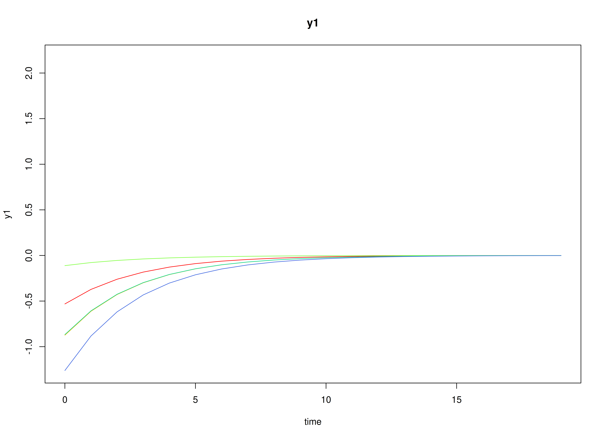
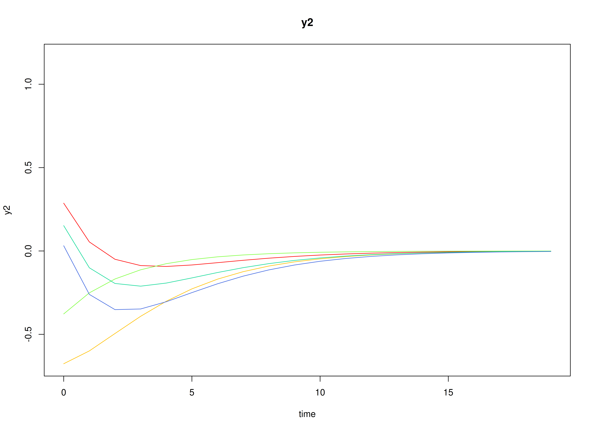
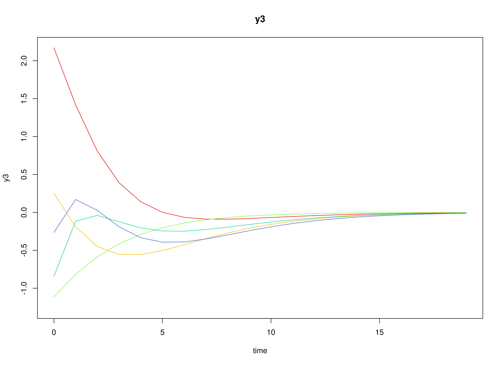
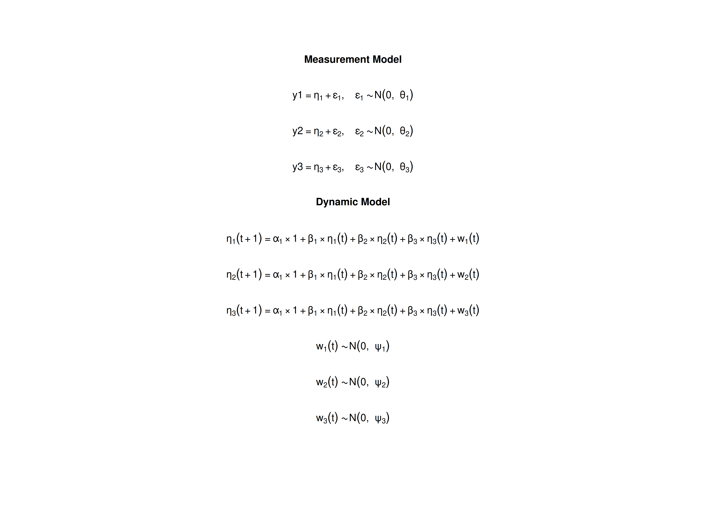

Model
The measurement model is given by where , , and are random variables and , , and are model parameters. represents a vector of observed random variables, a vector of latent random variables, and a vector of random measurement errors, at time and individual . denotes a vector of intercepts, a matrix of factor loadings, and the covariance matrix of .
An alternative representation of the measurement error is given by where is a vector of independent standard normal random variables and .
The dynamic structure is given by where , , and are random variables, and , , and are model parameters. Here, is a vector of latent variables at time and individual , represents a vector of latent variables at time and individual , and represents a vector of dynamic noise at time and individual . denotes a vector of intercepts, a matrix of autoregression and cross regression coefficients, and the covariance matrix of .
An alternative representation of the dynamic noise is given by where .
Data Generation
Notation
Let be the number of time points and be the number of individuals.
Let the measurement model intecept vector be given by
Let the factor loadings matrix be given by
Let the measurement error covariance matrix be given by
Let the initial condition be given by
Let the constant vector be given by
Let the transition matrix be given by
Let the dynamic process noise be given by
R Function Arguments
n
#> [1] 50
time
#> [1] 100
mu0
#> [1] 0 0 0
sigma0
#> [,1] [,2] [,3]
#> [1,] 0.19607843 0.1183232 0.02985385
#> [2,] 0.11832319 0.3437711 0.13818551
#> [3,] 0.02985385 0.1381855 0.26638284
sigma0_l # sigma0_l <- t(chol(sigma0))
#> [,1] [,2] [,3]
#> [1,] 0.44280744 0.0000000 0.000000
#> [2,] 0.26721139 0.5218900 0.000000
#> [3,] 0.06741949 0.2302597 0.456966
alpha
#> [1] 0 0 0
beta
#> [,1] [,2] [,3]
#> [1,] 0.7 0.0 0.0
#> [2,] 0.5 0.6 0.0
#> [3,] -0.1 0.4 0.5
psi
#> [,1] [,2] [,3]
#> [1,] 0.1 0.0 0.0
#> [2,] 0.0 0.1 0.0
#> [3,] 0.0 0.0 0.1
psi_l # psi_l <- t(chol(psi))
#> [,1] [,2] [,3]
#> [1,] 0.3162278 0.0000000 0.0000000
#> [2,] 0.0000000 0.3162278 0.0000000
#> [3,] 0.0000000 0.0000000 0.3162278
nu
#> [1] 0 0 0
lambda
#> [,1] [,2] [,3]
#> [1,] 1 0 0
#> [2,] 0 1 0
#> [3,] 0 0 1
theta
#> [,1] [,2] [,3]
#> [1,] 0.2 0.0 0.0
#> [2,] 0.0 0.2 0.0
#> [3,] 0.0 0.0 0.2
theta_l # theta_l <- t(chol(theta))
#> [,1] [,2] [,3]
#> [1,] 0.4472136 0.0000000 0.0000000
#> [2,] 0.0000000 0.4472136 0.0000000
#> [3,] 0.0000000 0.0000000 0.4472136Visualizing the Dynamics Without Process Noise (n = 5 with Different Initial Condition)



Using the SimSSMFixed Function from the
simStateSpace Package to Simulate Data
library(simStateSpace)
sim <- SimSSMFixed(
n = n,
time = time,
mu0 = mu0,
sigma0_l = sigma0_l,
alpha = alpha,
beta = beta,
psi_l = psi_l,
nu = nu,
lambda = lambda,
theta_l = theta_l,
type = 0
)
data <- as.data.frame(sim)
head(data)
#> id time y1 y2 y3
#> 1 1 0 -0.66908807 0.16178434 0.2955693
#> 2 1 1 -0.23021811 0.22873073 -0.2540210
#> 3 1 2 0.93689389 0.09496693 -0.9267506
#> 4 1 3 0.04445794 0.67521289 -0.1792168
#> 5 1 4 0.15413707 0.82591676 0.8976536
#> 6 1 5 -0.09943698 0.67154173 0.2853507
summary(data)
#> id time y1 y2
#> Min. : 1.0 Min. : 0.00 Min. :-2.315283 Min. :-2.59732
#> 1st Qu.:13.0 1st Qu.:24.75 1st Qu.:-0.419280 1st Qu.:-0.48785
#> Median :25.5 Median :49.50 Median : 0.013478 Median : 0.03301
#> Mean :25.5 Mean :49.50 Mean : 0.005377 Mean : 0.01850
#> 3rd Qu.:38.0 3rd Qu.:74.25 3rd Qu.: 0.421270 3rd Qu.: 0.52017
#> Max. :50.0 Max. :99.00 Max. : 2.209104 Max. : 2.82920
#> y3
#> Min. :-2.35791
#> 1st Qu.:-0.41956
#> Median : 0.02900
#> Mean : 0.02677
#> 3rd Qu.: 0.46670
#> Max. : 2.55393
plot(sim)


Model Fitting
Prepare Initial Condition
dynr_initial <- dynr::prep.initial(
values.inistate = mu0,
params.inistate = c("mu0_1_1", "mu0_2_1", "mu0_3_1"),
values.inicov = sigma0,
params.inicov = matrix(
data = c(
"sigma0_1_1", "sigma0_2_1", "sigma0_3_1",
"sigma0_2_1", "sigma0_2_2", "sigma0_3_2",
"sigma0_3_1", "sigma0_3_2", "sigma0_3_3"
),
nrow = 3
)
)Prepare Measurement Model
dynr_measurement <- dynr::prep.measurement(
values.load = diag(3),
params.load = matrix(data = "fixed", nrow = 3, ncol = 3),
state.names = c("eta_1", "eta_2", "eta_3"),
obs.names = c("y1", "y2", "y3")
)Prepare Dynamic Process
dynr_dynamics <- dynr::prep.formulaDynamics(
formula = list(
eta_1 ~ alpha_1_1 * 1 + beta_1_1 * eta_1 + beta_1_2 * eta_2 + beta_1_3 * eta_3,
eta_2 ~ alpha_2_1 * 1 + beta_2_1 * eta_1 + beta_2_2 * eta_2 + beta_2_3 * eta_3,
eta_3 ~ alpha_3_1 * 1 + beta_3_1 * eta_1 + beta_3_2 * eta_2 + beta_3_3 * eta_3
),
startval = c(
alpha_1_1 = alpha[1], alpha_2_1 = alpha[2], alpha_3_1 = alpha[3],
beta_1_1 = beta[1, 1], beta_1_2 = beta[1, 2], beta_1_3 = beta[1, 3],
beta_2_1 = beta[2, 1], beta_2_2 = beta[2, 2], beta_2_3 = beta[2, 3],
beta_3_1 = beta[3, 1], beta_3_2 = beta[3, 2], beta_3_3 = beta[3, 3]
),
isContinuousTime = FALSE
)Prepare Process Noise
dynr_noise <- dynr::prep.noise(
values.latent = psi,
params.latent = matrix(
data = c(
"psi_1_1", "psi_2_1", "psi_3_1",
"psi_2_1", "psi_2_2", "psi_3_2",
"psi_3_1", "psi_3_2", "psi_3_3"
),
nrow = 3
),
values.observed = theta,
params.observed = matrix(
data = c(
"theta_1_1", "fixed", "fixed",
"fixed", "theta_2_2", "fixed",
"fixed", "fixed", "theta_3_3"
),
nrow = 3
)
)Prepare the Model
model <- dynr::dynr.model(
data = dynr_data,
initial = dynr_initial,
measurement = dynr_measurement,
dynamics = dynr_dynamics,
noise = dynr_noise,
outfile = "ssm.c"
)
Fit the Model
results <- dynr::dynr.cook(
model,
debug_flag = TRUE,
verbose = FALSE
)
#> [1] "Get ready!!!!"
#> using C compiler: ‘gcc (Ubuntu 13.3.0-6ubuntu2~24.04.1) 13.3.0’
#> Optimization function called.
#> Starting Hessian calculation ...
#> Finished Hessian calculation.
#> Original exit flag: 3
#> Modified exit flag: 3
#> Optimization terminated successfully: ftol_rel or ftol_abs was reached.
#> Original fitted parameters: 0.002305557 0.004079545 0.006105962 0.6912019
#> -0.01138488 0.001780962 0.4598536 0.6269283 -0.008786464 -0.05127745 0.3662852
#> 0.4733914 -2.216907 0.05657798 -0.1369814 -2.256298 0.0254946 -2.21456
#> -1.662424 -1.65876 -1.680193 -0.05038907 0.01306129 0.1535455 -1.821081
#> 0.5856715 0.03470936 -0.6332694 0.1619125 -2.034801
#>
#> Transformed fitted parameters: 0.002305557 0.004079545 0.006105962 0.6912019
#> -0.01138488 0.001780962 0.4598536 0.6269283 -0.008786464 -0.05127745 0.3662852
#> 0.4733914 0.1089455 0.006163917 -0.01492351 0.1050863 0.0018259 0.1113138
#> 0.1896786 0.1903749 0.1863381 -0.05038907 0.01306129 0.1535455 0.1618506
#> 0.09479129 0.005617732 0.58637 0.08924197 0.1448181
#>
#> Doing end processing
#> Successful trial
#> Total Time: 3.279547
#> Backend Time: 3.271325Summary
summary(results)
#> Coefficients:
#> Estimate Std. Error t value ci.lower ci.upper Pr(>|t|)
#> alpha_1_1 0.0023056 0.0051113 0.451 -0.0077125 0.0123236 0.3260
#> alpha_2_1 0.0040795 0.0059274 0.688 -0.0075380 0.0156970 0.2457
#> alpha_3_1 0.0061060 0.0062257 0.981 -0.0060961 0.0183081 0.1634
#> beta_1_1 0.6912019 0.0443653 15.580 0.6042476 0.7781563 <2e-16 ***
#> beta_1_2 -0.0113849 0.0272809 -0.417 -0.0648545 0.0420847 0.3382
#> beta_1_3 0.0017810 0.0222164 0.080 -0.0417625 0.0453244 0.4681
#> beta_2_1 0.4598536 0.0428419 10.734 0.3758850 0.5438221 <2e-16 ***
#> beta_2_2 0.6269283 0.0335534 18.685 0.5611650 0.6926917 <2e-16 ***
#> beta_2_3 -0.0087865 0.0261884 -0.336 -0.0601149 0.0425419 0.3686
#> beta_3_1 -0.0512774 0.0323600 -1.585 -0.1147019 0.0121470 0.0566 .
#> beta_3_2 0.3662852 0.0324468 11.289 0.3026907 0.4298797 <2e-16 ***
#> beta_3_3 0.4733914 0.0354507 13.354 0.4039093 0.5428735 <2e-16 ***
#> psi_1_1 0.1089455 0.0148070 7.358 0.0799244 0.1379666 <2e-16 ***
#> psi_2_1 0.0061639 0.0049789 1.238 -0.0035945 0.0159223 0.1079
#> psi_3_1 -0.0149235 0.0047161 -3.164 -0.0241669 -0.0056801 0.0008 ***
#> psi_2_2 0.1050863 0.0111471 9.427 0.0832383 0.1269343 <2e-16 ***
#> psi_3_2 0.0018259 0.0046732 0.391 -0.0073335 0.0109853 0.3480
#> psi_3_3 0.1113138 0.0158722 7.013 0.0802048 0.1424229 <2e-16 ***
#> theta_1_1 0.1896786 0.0121966 15.552 0.1657737 0.2135835 <2e-16 ***
#> theta_2_2 0.1903749 0.0107378 17.729 0.1693291 0.2114206 <2e-16 ***
#> theta_3_3 0.1863381 0.0154322 12.075 0.1560916 0.2165845 <2e-16 ***
#> mu0_1_1 -0.0503891 0.0758496 -0.664 -0.1990516 0.0982735 0.2533
#> mu0_2_1 0.0130613 0.1204303 0.108 -0.2229777 0.2491003 0.4568
#> mu0_3_1 0.1535455 0.0785707 1.954 -0.0004502 0.3075411 0.0254 *
#> sigma0_1_1 0.1618506 0.0589334 2.746 0.0463433 0.2773579 0.0030 **
#> sigma0_2_1 0.0947913 0.0647130 1.465 -0.0320438 0.2216264 0.0715 .
#> sigma0_3_1 0.0056177 0.0419561 0.134 -0.0766147 0.0878502 0.4467
#> sigma0_2_2 0.5863700 0.1456709 4.025 0.3008602 0.8718797 <2e-16 ***
#> sigma0_3_2 0.0892420 0.0677731 1.317 -0.0435909 0.2220748 0.0940 .
#> sigma0_3_3 0.1448181 0.0625760 2.314 0.0221715 0.2674648 0.0103 *
#> ---
#> Signif. codes: 0 '***' 0.001 '**' 0.01 '*' 0.05 '.' 0.1 ' ' 1
#>
#> -2 log-likelihood value at convergence = 26336.29
#> AIC = 26396.29
#> BIC = 26591.81Parameter Estimates
alpha_hat
#> [1] 0.002305557 0.004079545 0.006105962
beta_hat
#> [,1] [,2] [,3]
#> [1,] 0.69120191 -0.01138488 0.001780962
#> [2,] 0.45985359 0.62692831 -0.008786464
#> [3,] -0.05127745 0.36628519 0.473391396
psi_hat
#> [,1] [,2] [,3]
#> [1,] 0.108945506 0.006163917 -0.01492351
#> [2,] 0.006163917 0.105086287 0.00182590
#> [3,] -0.014923506 0.001825900 0.11131383
theta_hat
#> [,1] [,2] [,3]
#> [1,] 0.1896786 0.0000000 0.0000000
#> [2,] 0.0000000 0.1903749 0.0000000
#> [3,] 0.0000000 0.0000000 0.1863381
mu0_hat
#> [1] -0.05038907 0.01306129 0.15354546
sigma0_hat
#> [,1] [,2] [,3]
#> [1,] 0.161850621 0.09479129 0.005617732
#> [2,] 0.094791289 0.58636995 0.089241969
#> [3,] 0.005617732 0.08924197 0.144818122